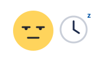
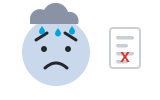

01긍정 · Positive기쁘다
여러분을 알게 되어서 참 기쁩니다.
I am very glad to have met you all.
Emotion Words · 2000 Essential Korean Words (Darakwon)
Learn each feeling from a face and one real sentence from the book. Most of these words end in -하다 or are -ㅂ irregular.
The words run in three groups: 긍정 (Positive, 7), 반응 (Reaction, 3), 부정 (Negative, 13).
Space listen · ← → move · K show Korean
여러분을 알게 되어서 참 기쁩니다.
I am very glad to have met you all.
저는 사랑하는 사람과 결혼하고 싶어요.
I want to marry the person I love.
운동한 후에 샤워를 하면 기분이 상쾌해요.
When I shower after exercising, I feel refreshed.
아이들이 놀이 공원에서 신나게 놀았습니다.
The children played excitedly at the amusement park.
저는 한국 생활이 즐겁습니다.
I find life in Korea enjoyable.
시험이 끝나서 마음이 편안해요.
The exam is over, so my mind is at ease.
사랑하는 사람과 결혼해서 행복해요.
I married the person I love, so I am happy.
안나 씨는 1년 전에 한국에 왔습니다. 그래서 지금 고향이 그립습니다.
Anna came to Korea a year ago, so now she misses her hometown.
상을 받았는데 기분이 어때요?
You received an award, so how do you feel?
처음 본 외국 사람이 한국말을 잘해서 놀랐어요.
I was surprised that a foreigner I met for the first time spoke Korean well.
피터 씨는 하숙집을 못 구해서 걱정입니다.
Peter is worried because he can't find a boarding house.
하숙방이 좁고 창문이 없어서 답답해요.
The boarding room is small and has no window, so it feels stuffy.
저는 무서운 영화를 싫어해요.
I don't like scary movies.
저는 한국말을 잘하는 안나 씨가 부러워요.
I envy Anna, who speaks Korean well.
시험 때문에 불안해서 잠을 못 잤어요.
I was uneasy because of the exam, so I couldn't sleep.
고향에 돌아가는 것은 기쁘지만, 친구들과 헤어져서 섭섭해요.
I'm glad to go back to my hometown, but I'm sad to part from my friends.
어제 본 드라마가 너무 슬펐어요.
The drama I watched yesterday was so sad.

리에 씨는 어제 약속이 없어서 하루 종일 집에 혼자 있었어요. 그래서 너무 심심했어요.
Rie had no plans yesterday and was home alone all day, so she was very bored.
리에 씨는 혼자 살아서 가끔 외롭습니다.
Rie lives alone, so she is sometimes lonely.

저는 취직 시험에 계속 떨어져서 우울합니다.
I keep failing job exams, so I feel depressed.
매일 똑같은 일을 하면 지루해요.
If you do the same work every day, it gets boring.
길에서 넘어져서 창피했어요.
I fell over in the street, so I was embarrassed.
친구가 저한테 거짓말을 해서 화가 났어요.
My friend lied to me, so I got angry.
From 2000 Essential Korean Words for Beginners (Darakwon), Ch.1 People §2 Emotions, pp.25–31. Words, readings and example sentences are the book's. Faces are flat drawings for study.
How each word is used in a sentence. Think of the pattern first, then tap to check.
-이/가 기쁘다 · -이/가 -을/를 기뻐하다
기뻐하다 to be pleased · 기쁨 joy · 반대 슬프다
-이/가 -을/를 사랑하다
사랑하다 to love
-이/가 상쾌하다
-이/가 신나다
-이/가 즐겁다
즐거워하다 to enjoy
-이/가 편안하다
반대 불편하다
-이/가 행복하다
행복하다 to be happy · 행복해하다 to feel happy · 행복을 느끼다 to feel happiness
-이/가 그립다 · -이/가 -을/를 그리워하다
그리워하다 to long for · 그리움 longing
Stronger and wider than 보고 싶다: works for places and times, not only people.
기분이 좋다 / 나쁘다
-이/가 (깜짝) 놀라다
-이/가 걱정이다 / 걱정(이) 되다 · -을/를 걱정하다
걱정하다 to worry
-이/가 답답하다
Physical stuffiness and the frustrated, blocked feeling. The book's second example: 한국말을 잘 못해서 답답해요.
-은/는 -이/가 무섭다 · -은/는 -을/를 무서워하다
무서워하다 to be afraid of
-은/는 -이/가 부럽다 · -은/는 -을/를 부러워하다
부러워하다 to envy
-이/가 불안하다
불안하다 to be uneasy · 불안해하다 to feel uneasy
-이/가 섭섭하다
No clean English word. The sadness of parting, usually mixed with something good.
-이/가 슬프다
슬퍼하다 to grieve · 슬픔 sadness · 반대 기쁘다
-이/가 심심하다
You have nothing to do. Compare 지루하다, where the thing itself is tedious.
-이/가 외롭다
외로워하다 to feel lonely · 외로움 loneliness
-이/가 우울하다
우울해하다 to feel depressed · 우울증 depression (the condition)
-이/가 지루하다
지루해하다 to find tedious
The thing itself is dull. Compare 심심하다, where you simply have nothing to do.
-이/가 창피하다
창피해하다 to feel ashamed
화가 나다 to get angry · 화를 내다 to show anger · 화를 풀다 to let anger go · 화를 참다 to hold anger in
Tap a word's play button to hear it. Hide one side, then recall it before you tap to check.
여러분을 알게 되어서 참 기쁩니다. 저는 사랑하는 사람과 결혼하고 싶어요. 운동한 후에 샤워를 하면 기분이 상쾌해요. 아이들이 놀이 공원에서 신나게 놀았습니다. 저는 한국 생활이 즐겁습니다. 시험이 끝나서 마음이 편안해요. 사랑하는 사람과 결혼해서 행복해요.
I am very glad to have met you all. I want to marry the person I love. When I shower after exercising, I feel refreshed. The children played excitedly at the amusement park. I find life in Korea enjoyable. The exam is over, so my mind is at ease. I married the person I love, so I am happy.
안나 씨는 1년 전에 한국에 왔습니다. 그래서 지금 고향이 그립습니다. 상을 받았는데 기분이 어때요? 처음 본 외국 사람이 한국말을 잘해서 놀랐어요.
Anna came to Korea a year ago, so now she misses her hometown. You received an award, so how do you feel? I was surprised that a foreigner I met for the first time spoke Korean well.
피터 씨는 하숙집을 못 구해서 걱정입니다. 하숙방이 좁고 창문이 없어서 답답해요. 저는 무서운 영화를 싫어해요. 저는 한국말을 잘하는 안나 씨가 부러워요. 시험 때문에 불안해서 잠을 못 잤어요. 고향에 돌아가는 것은 기쁘지만, 친구들과 헤어져서 섭섭해요. 어제 본 드라마가 너무 슬펐어요. 리에 씨는 어제 약속이 없어서 하루 종일 집에 혼자 있었어요. 그래서 너무 심심했어요. 리에 씨는 혼자 살아서 가끔 외롭습니다. 저는 취직 시험에 계속 떨어져서 우울합니다. 매일 똑같은 일을 하면 지루해요. 길에서 넘어져서 창피했어요. 친구가 저한테 거짓말을 해서 화가 났어요.
Peter is worried because he can't find a boarding house. The boarding room is small and has no window, so it feels stuffy. I don't like scary movies. I envy Anna, who speaks Korean well. I was uneasy because of the exam, so I couldn't sleep. I'm glad to go back to my hometown, but I'm sad to part from my friends. The drama I watched yesterday was so sad. Rie had no plans yesterday and was home alone all day, so she was very bored. Rie lives alone, so she is sometimes lonely. I keep failing job exams, so I feel depressed. If you do the same work every day, it gets boring. I fell over in the street, so I was embarrassed. My friend lied to me, so I got angry.
문. 기쁘다
to be glad, to be happy
A. -이/가 기쁘다 · -이/가 -을/를 기뻐하다
기뻐하다 to be pleased · 기쁨 joy · 반대 슬프다
문. 사랑
love
A. -이/가 -을/를 사랑하다
사랑하다 to love
문. 상쾌하다
to be refreshing
A. -이/가 상쾌하다
문. 신나다
to be excited
A. -이/가 신나다
문. 즐겁다
to be enjoyable, to be cheerful
A. -이/가 즐겁다
즐거워하다 to enjoy
문. 편안하다
to be at ease, free from anxiety
A. -이/가 편안하다
반대 불편하다
문. 행복
happiness
A. -이/가 행복하다
행복하다 to be happy · 행복해하다 to feel happy · 행복을 느끼다 to feel happiness
문. 그립다
to be missed, to be longed for
A. -이/가 그립다 · -이/가 -을/를 그리워하다
그리워하다 to long for · 그리움 longing
문. 기분
feeling, mood
A. 기분이 좋다 / 나쁘다
문. 놀라다
to be surprised, to be amazed
A. -이/가 (깜짝) 놀라다
문. 걱정
anxiety, worry
A. -이/가 걱정이다 / 걱정(이) 되다 · -을/를 걱정하다
걱정하다 to worry
문. 답답하다
to be stuffy, to feel helpless
A. -이/가 답답하다
문. 무섭다
to be scary
A. -은/는 -이/가 무섭다 · -은/는 -을/를 무서워하다
무서워하다 to be afraid of
문. 부럽다
to be envious
A. -은/는 -이/가 부럽다 · -은/는 -을/를 부러워하다
부러워하다 to envy
문. 불안
uneasiness, restlessness
A. -이/가 불안하다
불안하다 to be uneasy · 불안해하다 to feel uneasy
문. 섭섭하다
to be sad at parting, to be regretful
A. -이/가 섭섭하다
문. 슬프다
to be sad
A. -이/가 슬프다
슬퍼하다 to grieve · 슬픔 sadness · 반대 기쁘다
문. 심심하다
to be bored (from having too much time)
A. -이/가 심심하다
문. 외롭다
to be lonely
A. -이/가 외롭다
외로워하다 to feel lonely · 외로움 loneliness
문. 우울하다
to be depressed
A. -이/가 우울하다
우울해하다 to feel depressed · 우울증 depression (the condition)
문. 지루하다
to be bored, to be tedious
A. -이/가 지루하다
지루해하다 to find tedious
문. 창피하다
to be embarrassed, to be ashamed
A. -이/가 창피하다
창피해하다 to feel ashamed
문. 화
anger
A. 화가 나다 to get angry · 화를 내다 to show anger · 화를 풀다 to let anger go · 화를 참다 to hold anger in
From 2000 Essential Korean Words for Beginners (Darakwon), Ch.1 People §2 Emotions, pp.25–31. Words, readings and example sentences are the book's. Faces are flat drawings for study.
Say it in your head first, then tap the box to check.